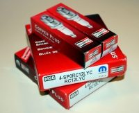
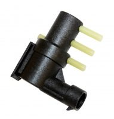
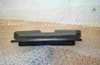
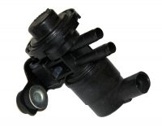
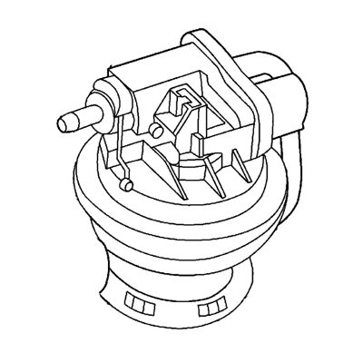
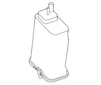
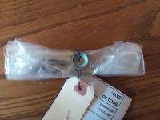
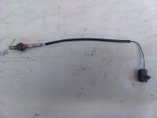

Emission System
23 parts
1992 - 1998 Dodge Viper RT/10 Air Cleaner Housing 04848054
Part # 04848054
$95.00

1992 - 2002 Dodge Viper Intake Manifold Schrader Valve - 05245193
Part # 05245193
$43.00
 Out of stock
Out of stock1992 - 2002 Dodge Viper RT/10 GTS Smooth Intake Hoses - P5007362
Part # P5007362
$282.00

Out of stock1992 - 2002 Dodge Viper Spark Plug Set - SP0RC12LYC
Part # SP0RC12LYC
$40.00

1993 - 1995 Dodge Viper RT/10 Duty Cycle Purge Solenoid - 05227635
Part # 5227635
$63.00

1995-1996 Dodge Viper RT10 Air intake Baffel 04709361
Part # 04709361
$84.00

1996.5 - 2002 Dodge Viper Spark Plug Wire Set - 04883365AA
Part # 4883365AA
$199.00

1997 - 2006 Dodge Viper Duty Cycle Purge Solenoid - 04669475AB
Part # 4669475AB
$45.00

1998 Dodge Viper Front Upstream Exhaust O2 Sensor - 56041212
Part # 56041212
$110.00

1998 Dodge Viper Rear Downstream Exhaust O2 Sensor - 56041212AB
Part # 56041212AB
$150.00
 Out of stock
Out of stock1999 - 2002 Dodge Viper Front Exhaust O2 Sensor - 56041212AE
Part # 56041212AE
$105.00
 Out of stock
Out of stock1999 - 2002 Dodge Viper Rear Exhaust O2 Sensor - 56041212AF
Part # 56041212AF
$110.00

Out of stock2000 - 2002 Dodge Viper Emissions Leak Detection Pump - 05290002AA
Part # 05290002AA
$130.00

2000 - 2002 Dodge Viper Emissions Vapor Canister - 05264889AA
Part # 05264889AA
$200.00

2003 - 2006 Dodge Viper Front Exhaust O2 Sensor - 56041699AA
Part # 56041699AA
$183.00
 Out of stock
Out of stock2003 - 2006 Dodge Viper Rear Exhaust O2 Sensor - 56041706AA
Part # 56041706AA
$120.00
 Out of stock
Out of stock2003 - 2010 Dodge Viper SRT10 Leak Detection Pump - 04891543AB
Part # 4891543AB
$155.00

2008 - 2010 Dodge Viper SRT10 Rear Downstream Exhaust O2 Sensor - 56029050AA
Part # 56029050AA
$90.00

2008 - 2013 Dodge SRT Viper Linear Purge Valve - 04891731AA
Part # 4891731AA
$11.00

92 - 10 DODGE VIPER WASHER FOR EXHAUST MANIFOLD STUD 06034595
Part # 06034595
$3.00
 Out of stock
Out of stock92-95 VIPER AIR CLEANER ASSY BOX COMPLETE 5245310 5245312 DODGE
Part # 05245312 05245310
$395.00

96-02 VIPER FACTORY BLUE SMOOTH TUBES, AIR INTAKE *PAIR* 05245778AB
Part # 05245778AB
$150.00

96-98 DODGE VIPER OXYGEN SENSOR 56041004
Part # 5641004
$198.00